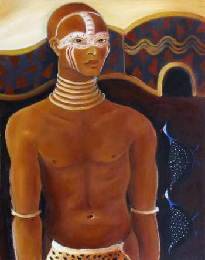

The Warrior
(24 x 30)
The pilgrimage of the Warrior involves the Rite of Passage. The Warrior has to slay the dragon and confront his adversaries. He might have to defy his own father, confront his boss or embark upon an entrepreneurial adventure. The energy of the Warrior is erotic and the journey is linked to strength, virility and courage. The serpent represents the shadow of the Warrior - in Christianity the serpent is regarded evil and cast out - but in Buddhism and Hinduism, the serpent represents healing. The serpent destroys evil. The shedding of the skin symbolizes the cycle of death and rebirth.
This painting is available in alternative giclee print sizes.
Size A: 8 x 10
Size B: 11 x 14